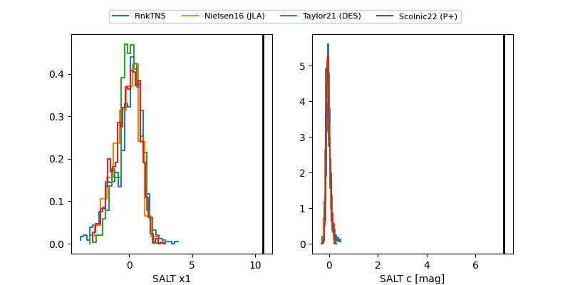

FINK: ZTF25abmppdj
Lasair: ZTF25abmppdj
ALeRCE: ZTF25abmppdj
ZTF25abmppdj (ztf,fink)
equatorial (ra, dec) = (75.8282,+1.02209)
galactic (l, b) = (198.8701,-23.34588)

last ztfg=19.00
6 ztfg detections